작업 흐름
- 입력
- 주제 한 줄 (장소 · 시대 · 주인공 · 할 일)
- 브리프
- 세트 2–4곳과 그곳다운 대상, 새로 새길 대상, 캐릭터(실루엣 · 2–3색 · 질량), 샷마다 카메라 이동과 동작
- 판화 · 캐릭터
Plate로 새 대상 새기기, 네 방향 캐릭터 페인터와 양방향 캐스트 시트 검토- 검사
- 세계에 색 없음 · 잉크와 종이 비율 · 관절 범위 · 디딘 발 고정 · 예비 동작 · 카메라 속도 · 결정성
- 출력
- 1920×1608 메이킹 MP4(합성 위 · 브레이크다운 아래) 또는 1920×804 합성 MP4, 라이브 페이지
cd examples/ice-voyage
node ../../scripts/render.mjs cast.html --cast
node ../../scripts/render.mjs index.html --shots --scale .5
node ../../scripts/check.mjs index.html
node ../../scripts/render.mjs index.html
node ../../scripts/render.mjs index.html --view film
node ../../scripts/new-piece.mjs ../../../my-film요구 사항: Node, Playwright Chromium, ffmpeg (네트워크 · npm install · GPU 불필요). 단계별 순서는 SKILL.md에 있습니다.
샘플
두 작품의 합성 화면과, 같은 순간의 3D 브레이크다운, 캐스트 시트를 모았습니다. 카드를 누르면 그 순간에 멈춘 라이브 페이지(위 합성 · 아래 브레이크다운)가 열립니다.
얼음 항해 examples/ice-voyage · 16.8초
시작 작품에 없는 주제로 브리프부터 새로 만든 예제. 빙산 · 산맥 · 물길 · 오로라 하늘을 작품 안에서 새로 새겼습니다.
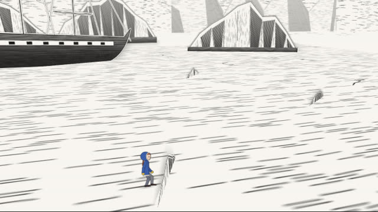
샷 1 · 크레인돛대에서 빙판으로돛대 높이에서 넬의 눈높이까지 내려오는 카메라
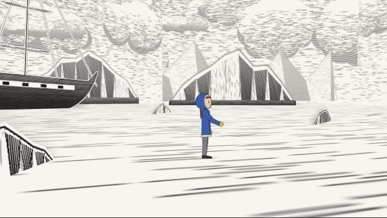
샷 1 · 가리키기저기 빙산팔을 뒤로 당겼다가 뻗는 예비 동작 · 넘침
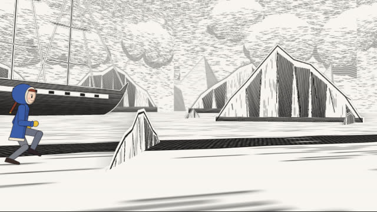
샷 2 · 달리기물길을 따라체공이 있는 달리기 · 디딘 발 고정 · 땋은 머리가 늦게 따라옴
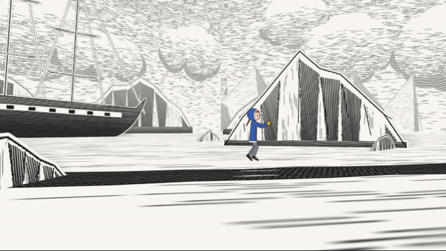
샷 2 · 점프물길을 건너뛰기웅크림 → 도약 → 체공 → 착지 흡수, 빙산 카드가 경첩처럼 일어섬
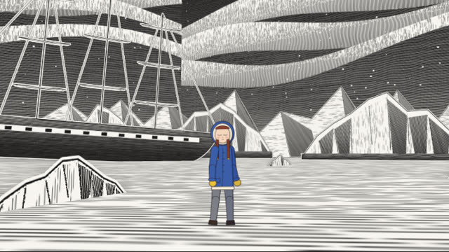
샷 3 · 밤오로라 아래발을 옮겨 딛는 회전 · 어두운 선망 하늘
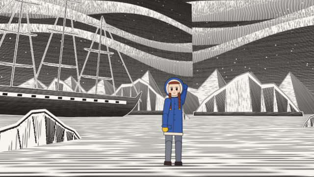
샷 3 · 손 흔들기오로라에게 인사얼굴을 가리지 않는 먼 쪽 팔 · 노란 벙어리장갑
시계탑 심부름 templates/ · 17.2초
시작 작품. 시계공 견습생 오토가 열쇠를 들고 장터 거리를 달려 시계탑에 오릅니다.
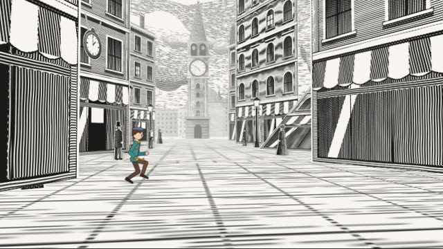
샷 1 · 트럭장터 거리거리를 가로질러 달리기 · 건물 카드가 일어섬
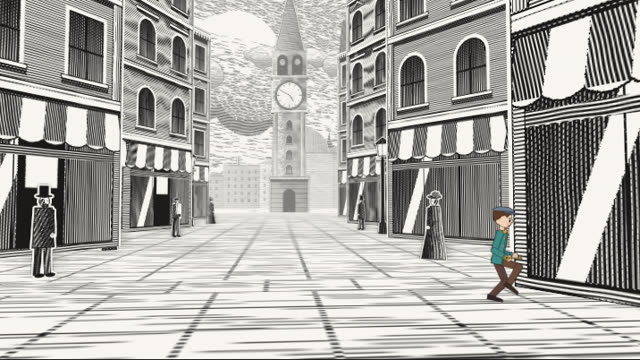
샷 1 · 트럭판화 행인 사이로콜라주 각도로 선 파사드 여덟 장
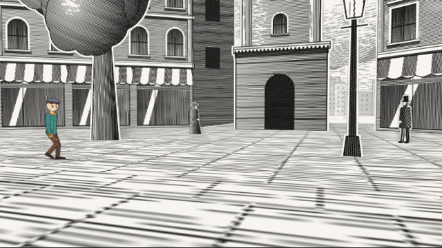
샷 2 · 걷기시계탑 광장3/4 걷기 · 목도리 꼬리가 늦게 따라옴
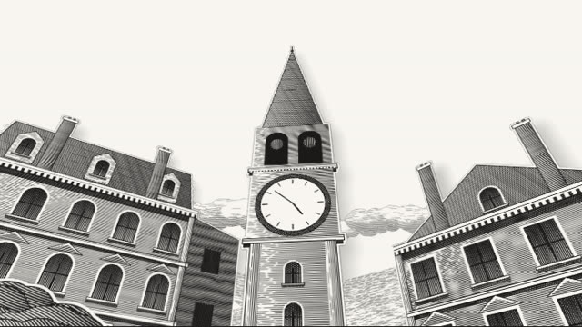
샷 2 · 크레인시계까지사람 눈높이에서 시계판까지 올라가는 카메라
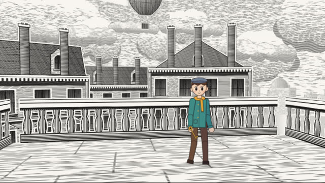
샷 3 · 오빗종탑 난간작품에서 새로 새긴 난간 · 땅에 묻어 지붕만 보이게 한 파사드
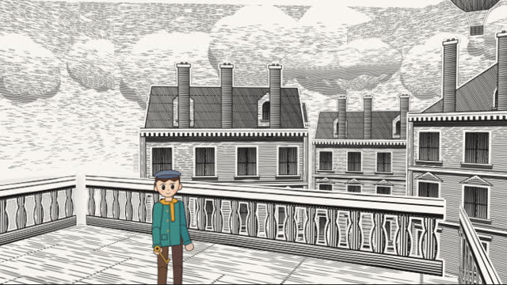
샷 3 · 손 흔들기열기구에게돌아서기 → 손 흔들기, 열기구 카드가 흘러감
브레이크다운 · 캐스트 시트 메이킹 화면의 아래 칸 · cast.html
같은 장면을 바깥 카메라로 본 3D 브레이크다운(체커보드, 레이어 색 윤곽과 핸들, 카메라 절두체와 경로)과, 장면보다 먼저 검토하는 캐스트 시트.
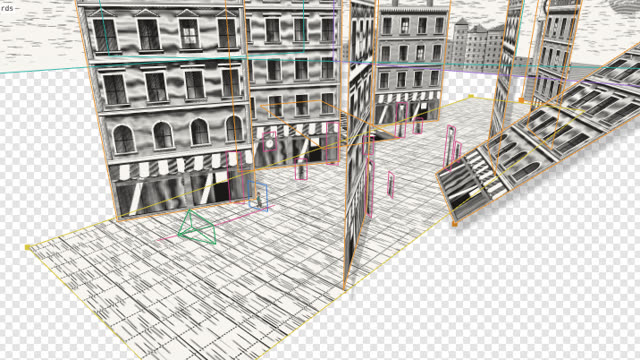
브레이크다운 · 장터 거리일어서는 카드S.rise — 카메라가 다가올 때 바닥에서 일어섬
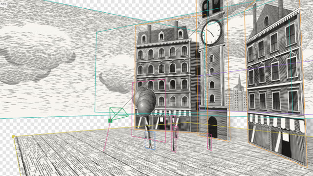
브레이크다운 · 광장하늘 고리S.ring — 판화 하늘을 호로 걸어 카메라가 돌아도 끝이 안 보임
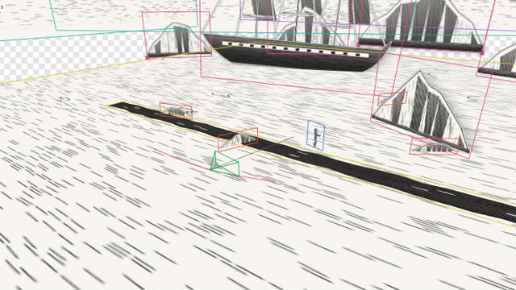
브레이크다운 · 물길바닥에 깐 물길S.floor — 판화를 바닥에 눕힌 카드
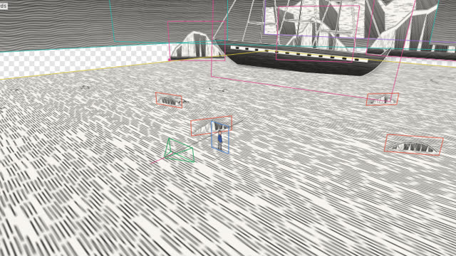
브레이크다운 · 밤오로라 세트같은 세트 함수로 낮과 밤을 짓기
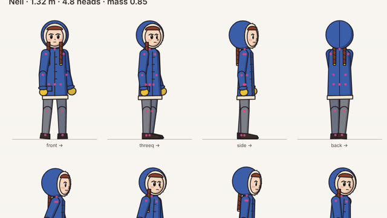
캐스트 시트넬후드와 털 테두리 · 땋은 머리 · 관절 점 표시
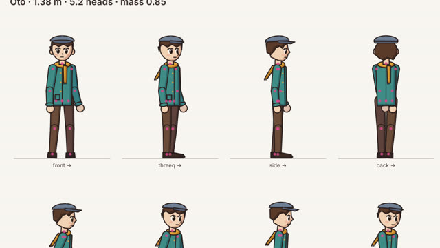
캐스트 시트오토납작 모자 · 목도리 꼬리 · 놋쇠 열쇠
실제 작품
이 레포에서 원본 게시물을 보고 만든 두 작품과, 스킬을 만든 출처입니다.
링크
- SKILL.md 워크플로
- 폴더 lib · scripts · references · templates · examples
- README.md 빠른 시작
- references/SOURCE.md 원본 게시물 분석 · 가져온 것과 안 가져온 것
- references/BRIEF.md 브리프 틀 · 스틸과 캐스트 채점 기준
- references/KIT.md 판화 새기기 · 세트 · 카메라 · 동작
- references/LOOK.md 조각가 · 카드 · 셀 칠 · 화면 구성
- references/LESSONS.md 겪은 문제와 해결